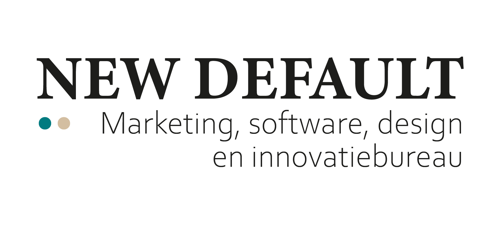

Veel lucht
Laat marges en witruimte het werk doen. NewDefault voelt kalm en zeker, niet vol of hard roepend.
NewDefault style source
Een losse documentatiebron voor NewDefault-materiaal. Niet automatisch toepassen op klantwerk; alleen gebruiken wanneer NewDefault bewust de afzender of visuele laag is.

Principes
De stijl brengt strategie, design en technologie samen zonder drukte. Denk aan veel witruimte, heldere statements, beperkte kleuraccenten en concrete taal.
Laat marges en witruimte het werk doen. NewDefault voelt kalm en zeker, niet vol of hard roepend.
Schrijf actief en direct. Koppel strategie altijd aan zichtbare uitvoering en waarde.
Gebruik teal als hoofdaccent, zand als warmte en groen alleen ondersteunend.
Kleur
De basis is wit/off-white met donker tekstcontrast. Kleur ondersteunt de boodschap, bijvoorbeeld in knoppen, grafieken, labels en proposal accenten.
#007A80#D3BEA1#A8BF5D#111111#F7F5F0#EFE8DD#DADAD9#FFFFFFTypografie
Gebruik een duidelijke hierarchie. Grote koppen mogen dominant zijn, maar bodycopy blijft rustig, kort en goed scanbaar.
NewDefault combineert inhoud, esthetiek en technische slagkracht. De toon is actief en direct, zonder loze marketingclaims of afstandelijke bureauzinnen.
Componenten
Deze componenten zijn bedoeld voor proposal-HTML, interne documentatie en visuele bijlagen. Voor klant-UI blijft de klantstijl leidend.
Gebruik witte logo-varianten alleen op deze donkere of vergelijkbaar rustige achtergronden.
| Fase | Output | Duur |
|---|---|---|
| Strategie | Richting en scope | 1 week |
| Design | Prototype en flows | 2 weken |
| Build | Werkende versie | 4 weken |
Proposal layout
Voorstellen mogen NewDefault voelen wanneer het document vanuit jullie bureau komt. Bij klantgerichte output blijft de klantidentiteit leidend en blijft NewDefault subtiel.
Voorstel
Een voorbeeldcover met veel witruimte, directe taal en een rustige visuele laag. Geschikt voor proposal-HTML of PDF-export.
Wel doen
Niet doen